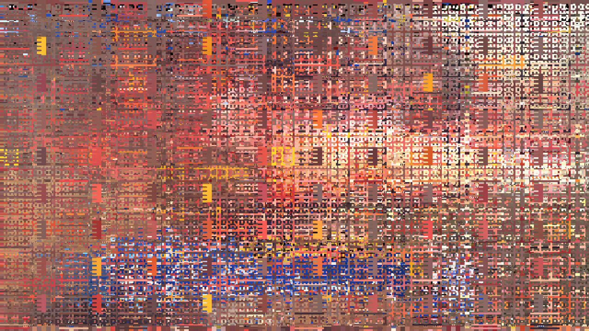

0. software for artists
interactive media is the discipline of using computers (from laptops to microcontrollers) to express oneself artistically
1. visual art with computers

work by casey reas
computers are good for working with:
- randomness
- repetition
- interaction
- translation (e.g. data visualization)
2. interaction with computers
thoughts about "making interactive art"?
there is a balance to be found between "passive"/classical art and "active"/digital art
finding THE meaning in a piece of art, from the audience's perspective, assumes that the artists knows exactly what she is doing. the introduction of the computer removes this exactness of knowledge -the computer becomes a partner
harold cohen worked on AARON, an artificial intelligence which paints on its own, but only according to what instructions cohen gave -in the end, cohen is still in charge
interactive art removes this hierarchy between artists/curator/audience member, and allows anyone to have their own, valid interpretation
"make art safer"
3. processing
an easy way to draw on the screen
similar in ethos to arduino
4. review
setup() vs. draw()
what do you need to give the illusion of animation?
how do you draw a circle?
how do you color a circle?
how do you deal with positions and directions?
how do you know your user has clicked?
setup() runs once, draw() runs every frame
you need to have a background() so that the frame is redrawn in its entierity every time, and so you don't see past drawings
fill() / stroke()
vectors can hold both directions and positions
PVector myPosition = new PVector(100, 200);
if(mousePressed(){
}
or
void mousePressed(){
}
5. today
drawing with the mouse
writing functions
arrays and for loops
6. drawing with the mouse
mouseX, mouseY are variables given to us, representing the mouse position
pmouseX, pmouseY represent the previous mouse position
the difference between past and present is movement
7. functions
functions do things
they need to be called
sometimes they need things to function (arguments)
they can return other things as a result
calling a function means writing its name somewhere in draw()
arguments are like the ingredients that you need for a recipe. a function can't work without them.
8. arrays
arrays are rows of data, aligned one next to the other
we need to give the type of data it will hold
and the size of it!
9. for loops
for loops allow us to go through arrays very quickly
more generally, they allow us to do things repeatedly very quickly
an array needs a starting number, a condition to continue, and a way to increment
for(int i = 0; i < 10; i++){
//this will count from 0 to 9 in just one frame
}
10. homework
make a generative paintbrush!
read lev manovich / watch casey reas